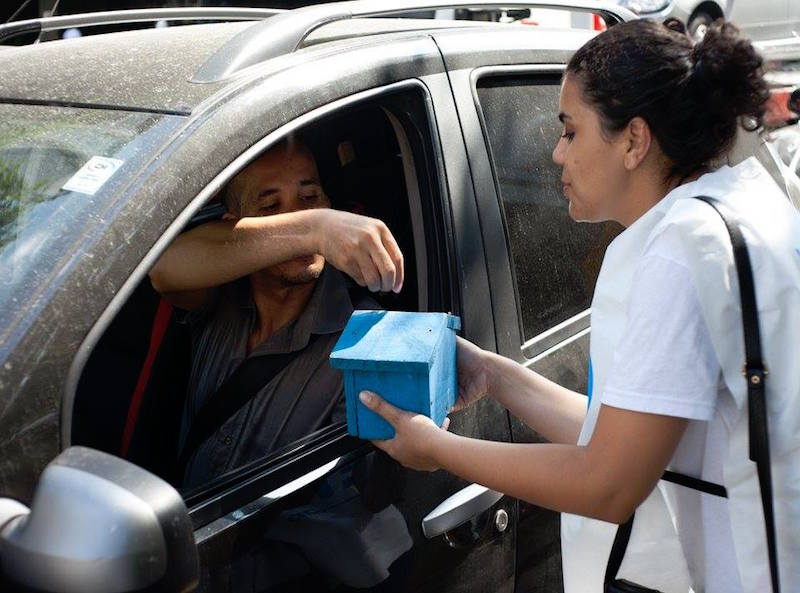

TETO mobiliza 8 mil voluntários e capta 10% de seu orçamento anual em três dias
19 de Abril de 2017 às 06:30
O voluntariado é a espinha dorsal do trabalho de combate à pobreza desenvolvido pelo TETO, organização sem fins lucrativos presente na América Latina e Caribe. Se normalmente a instituição engaja algumas centenas de pessoas no Brasil, onde está há uma década, ao longo de três dias por ano, mobiliza milhares de voluntários na campanha TETO Coleta. Durante ação, eles saem às ruas com a missão de captar recursos diretamente com o grande público – o dinheiro é investido em projetos comunitários.
A iniciativa surgiu no braço chileno da organização, e chegou ao Brasil em 2009. "É a maior ação de mobilização que temos. No ano passado, conseguimos em torno de oito mil voluntários nas cidades onde atuamos (Salvador, Curitiba, Rio de Janeiro, São Paulo, Santos, Campinas e a região do ABC paulista)", diz Carolina Mattar, diretora-executiva do TETO, que tem entre suas frentes a construção de moradias dignas para população em situação de vulnerabilidade social – atualmente, a instituição está em cerca de 40 comunidades brasileiras.
Para entender a importância da campanha, basta observar o desempenho que ela teve no ano passado. Na edição de 2016 do TETO Coleta, foram arrecadados R$ 447 mil, o que representa em torno de 10% do orçamento anual da instituição. Mas captar não é o único objetivo.
"É um momento em que podemos sensibilizar as pessoas sobre a questão das moradias precárias no Brasil”, destaca Carolina. Os voluntários, em geral jovens entre 18 e 25 anos "com um olhar crítico sobre a realidade brasileira", passam por treinamento antes da ação nas ruas.
Planejamento
Um trabalho desse porte se estende por muito mais do que os três dias em que a campanha é realizada. "Nós começamos a preparar tudo cinco meses antes de a ação ocorrer. A mobilização tem início no mês anterior, quando fazemos o chamamento para quem quiser participar", afirma Carolina.
Mas como o TETO consegue tanto engajamento? "Usamos muito as redes sociais. Uma agência parceira produz material para que divulguemos a ação. Além disso, também contamos com a capilaridade dos voluntários que tocam nosso dia a dia. Eles trazem muita gente", explica a diretora-executiva.
Já o desafio de coordenar milhares de pessoas nas ruas é enfrentado com a estratégia de descentralização. "Temos líderes de zona e de esquina. São voluntário mais experientes, livres para definir as abordagens, até porque, cada lugar tem contextos diferentes em relação a nossa causa", diz Carolina.
Trabalho consolidado
Em 2016, a ação TETO Coleta arrecadou 25% mais recursos do que na edição do ano anterior, apesar de contar com o mesmo número de voluntários. A explicação para o melhor desempenho está na consolidação do trabalho da organização em algumas regiões. "Foi o segundo ano da iniciativa em Curitiba, Salvador e Santos. As equipes lá se consolidaram de um ano para o outro, ganharam mais experiência com esse tipo de ação.”
Em 2017, o TETO Coleta acontecerá entre 5 e 7 de maio. Como ocorre todo ano, foi estipulada uma meta: R$ 500 mil. "Pretendemos chegar a esse resultado fortalecendo nossa campanha on-line para atrair mais voluntários", ressalta Carolina, que já está nos preparativos da ação.
A iniciativa surgiu no braço chileno da organização, e chegou ao Brasil em 2009. "É a maior ação de mobilização que temos. No ano passado, conseguimos em torno de oito mil voluntários nas cidades onde atuamos (Salvador, Curitiba, Rio de Janeiro, São Paulo, Santos, Campinas e a região do ABC paulista)", diz Carolina Mattar, diretora-executiva do TETO, que tem entre suas frentes a construção de moradias dignas para população em situação de vulnerabilidade social – atualmente, a instituição está em cerca de 40 comunidades brasileiras.
Para entender a importância da campanha, basta observar o desempenho que ela teve no ano passado. Na edição de 2016 do TETO Coleta, foram arrecadados R$ 447 mil, o que representa em torno de 10% do orçamento anual da instituição. Mas captar não é o único objetivo.
"É um momento em que podemos sensibilizar as pessoas sobre a questão das moradias precárias no Brasil”, destaca Carolina. Os voluntários, em geral jovens entre 18 e 25 anos "com um olhar crítico sobre a realidade brasileira", passam por treinamento antes da ação nas ruas.
Planejamento
Um trabalho desse porte se estende por muito mais do que os três dias em que a campanha é realizada. "Nós começamos a preparar tudo cinco meses antes de a ação ocorrer. A mobilização tem início no mês anterior, quando fazemos o chamamento para quem quiser participar", afirma Carolina.
Mas como o TETO consegue tanto engajamento? "Usamos muito as redes sociais. Uma agência parceira produz material para que divulguemos a ação. Além disso, também contamos com a capilaridade dos voluntários que tocam nosso dia a dia. Eles trazem muita gente", explica a diretora-executiva.
Já o desafio de coordenar milhares de pessoas nas ruas é enfrentado com a estratégia de descentralização. "Temos líderes de zona e de esquina. São voluntário mais experientes, livres para definir as abordagens, até porque, cada lugar tem contextos diferentes em relação a nossa causa", diz Carolina.
Trabalho consolidado
Em 2016, a ação TETO Coleta arrecadou 25% mais recursos do que na edição do ano anterior, apesar de contar com o mesmo número de voluntários. A explicação para o melhor desempenho está na consolidação do trabalho da organização em algumas regiões. "Foi o segundo ano da iniciativa em Curitiba, Salvador e Santos. As equipes lá se consolidaram de um ano para o outro, ganharam mais experiência com esse tipo de ação.”
Em 2017, o TETO Coleta acontecerá entre 5 e 7 de maio. Como ocorre todo ano, foi estipulada uma meta: R$ 500 mil. "Pretendemos chegar a esse resultado fortalecendo nossa campanha on-line para atrair mais voluntários", ressalta Carolina, que já está nos preparativos da ação.
Notícias mais populares
Gestão
Em agosto de 2017, a revista ÉPOCA e o Instituto Doar divulgaram a primeira ediç&...
Contexto e tendências
Criado para tornar mais transparentes as parcerias entre a administração públic...
Profissional captador
A captação de recursos é fundamental para a sustentabilidade de uma organiza&cc...